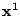
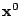
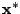

We investigate an alternative implementation of preconditioning techniques for the solution of non-linear problems. Within the framework of Newton-Krylov methods, preconditioning techniques are needed to improve the performance of the solvers. We use a different implementation approach to re-utilize existing semi-implicit methods to precondition fully implicit non-linear schemes. We use a predictor- corrector approach where the fully non-linear scheme is the corrector and the pre- existing semi-implicit scheme is the predictor [1,2]. The advantage of the proposed approach is that it allows to retrofit existing codes, with only minor modifications, in particular avoiding the need to reformulate existing methods in terms of variations, as required instead by other approaches now currently used.
A classic problem of computational science and engineering is the search for an efficient numerical scheme for solving non-linear time-dependent partial differential equations. Explicit and semi-implicit methods can provide simple solution techniques but are seriously limited by time step limitations for stability (explicit methods) and accuracy (semi-implicit methods).
Recently, significant progress has been made in the development of fully implicit approaches for solving nonlinear problems: the Newton-Krylov (NK) method. The method is developed from the Newton iterative method, by applying a linear iterative solver to the Jacobian equation for the Newton step and terminating that iteration when a suitable convergence criterion holds.
For the solution of the linear Jacobian equation, Krylov methods are often the choice, leading to the Newton-Krylov (NK) approach. However, for most cases, Krylov solvers can be extremely inefficient. The need for good preconditioners techniques becomes a constraining factor in the development of NK solvers.
In a number of fields, recent work based on multi-grid and physics-based preconditioners[3] have demonstrated extremely competitive performances.
In the present study, we discuss a different implementation of preconditioning: the predictor-corrector (PC) preconditioner [1,2]. The approach has two novelties. First, it preconditions directly the non-linear equations rather than the linear Jacobian equation for the Newton step. The idea is not new, but it is implemented here in a new way that leads to great simplifications of the implementation. We note that this simplification is designed also to minimize the effort in refitting existing semi-implicit codes into full fledged implicit codes, representing perhaps a greater advance in software engineering than in computational science. Second, we test new ways of preconditioning the equations by using a combination of predictor-corrector semi-implicit preconditioning.
The fundamental idea is to use a predictor to advance a semi-implicit discretization of the governing equations and use a corrector Newton step to correct for the initial state of the predictor step. The typical NK solver is used to compute the unknown value of the state vector at the end of the time step  from its known value at the previous time step . Instead, we use the Newton method to iterate for a modification of the actual known state  from the previous time step to find a modified ``previous'' state that makes the semi-implicit predictor step give the solution of the fully implicit method.
Two advantages are obvious. First, the actual previous state is likely to be a better first guess for the modified initial state of the predictor than it is for the final state of the corrector step. Second, by modifying the non-linear function and consequently modifying the Jacobian equation, the PC preconditioner modifies the spectral properties of the Jacobian matrix in the same way as preconditioners applied directly to the Jacobian equation. Indeed, as shown below the PC preconditioner gives the same type of speed-up of the Krylov convergence without requiring to formulate an actual preconditioning of the Krylov solver.
We use a suite of problems, including non-linear diffusion [2] and the standard driven cavity flow problem [1], as benchmarks to demonstrate the performance and the reliability of the PC preconditioning method.
[1] J. Ju, G. Lapenta, Predictor-Corrector Preconditioned Newton-Krylov Method For Cavity Flow, Lecture Notes in Computer Science 82 (2005) 3514.
[2] G. Lapenta, J. Ju, Predictor-Corrector Preconditioners for Newton-Krylov Solvers, J. Comp. Phys., submitted.
[3] D. A. Knoll, D. Keyes, Jacobian-free Newton-Krylov methods: a survey of approaches and applications, J. Comp. Phys. 193 (2004) 357-397.